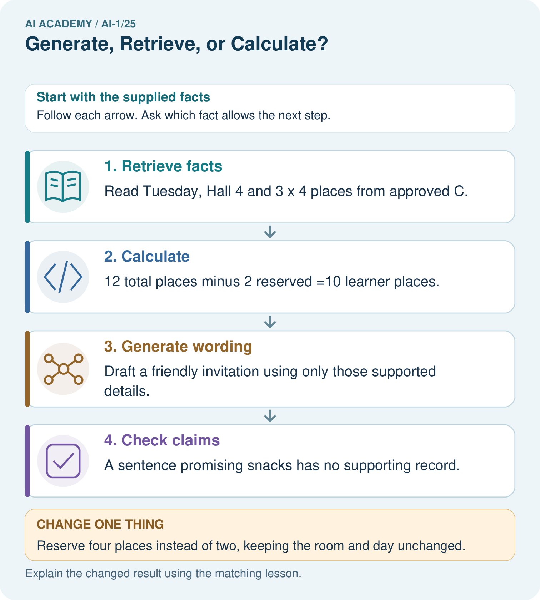
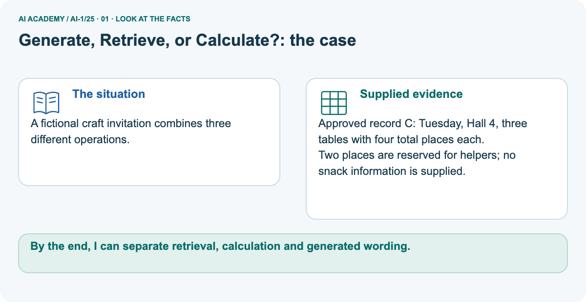
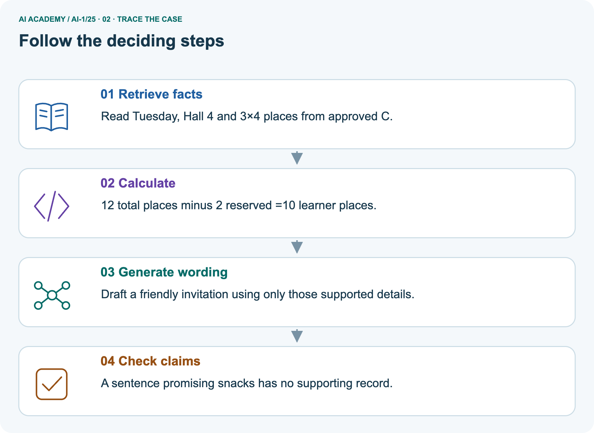
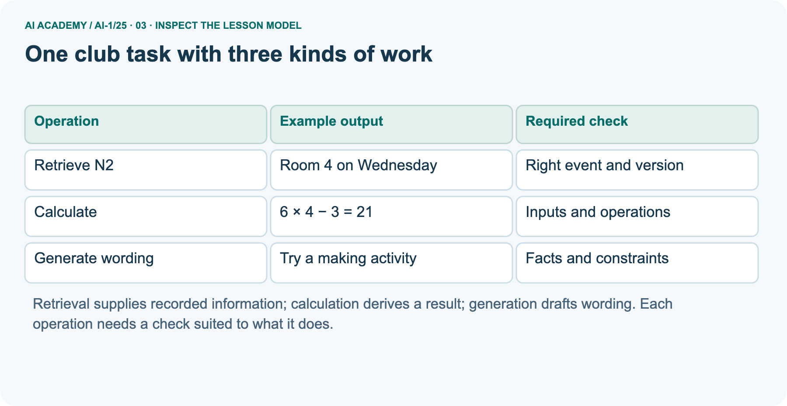
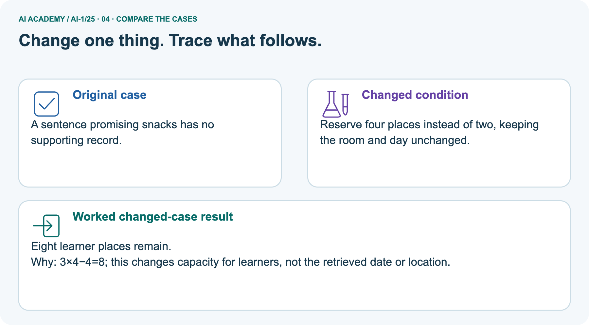
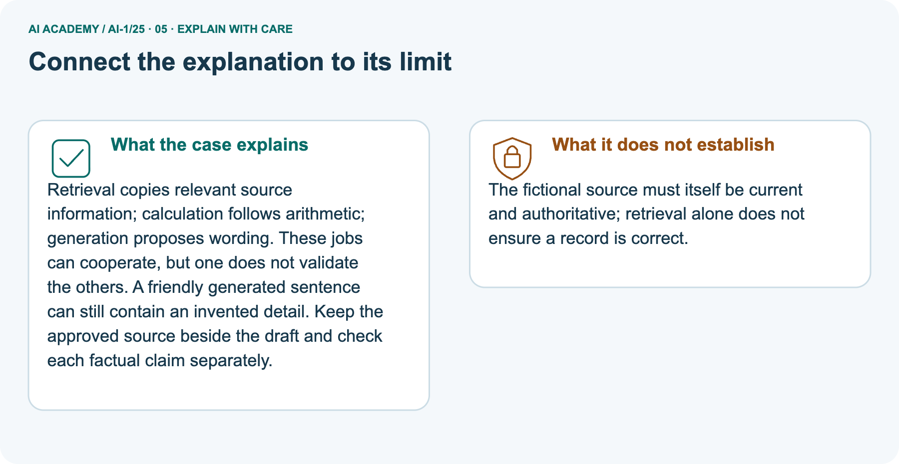
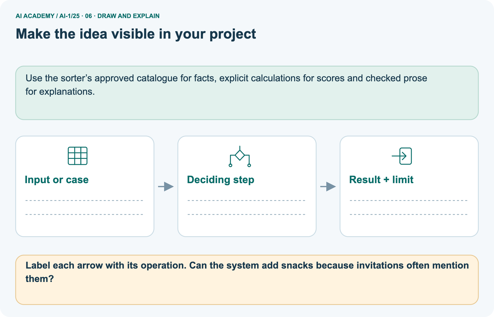

AI Academy · Level 1 · Grade 6 · Week 25 · Teacher guide
Generate, Retrieve, or Calculate?
Learn to understand, design, build, test and explain AI systems responsibly.
Project: Helpful Classroom Sorter
Teacher guide · 1 of 9
Generate, Retrieve, or Calculate?
Prepare Generate, Retrieve, or Calculate?: check the target, prerequisites, resources and adaptable teaching schedule.
Teach the learning cycle
Primary target: Distinguish retrieving a record, calculating from inputs and generating wording
| Session | Sequence and minutes | Resources |
|---|---|---|
| Session 1 · Understand · 45 min | 0–7: recall and prerequisite; 7–15: inspect the concrete case and predict; 15–30: teacher models the worked trace; 30–40: learners explain a step using the text and visual; 40–45: check the core idea. | Use Your mission, Notice the evidence, See how it works, Compare the cases, Words that unlock the idea and Follow a worked example; record the brief recall in the workbook. |
| Session 2 · Practise · 45 min | 0–5: retrieve the procedure; 5–15: W2 completion practice; 15–23: explain and check with a partner; 23–30: each learner answers the misconception check; 30–40: targeted reteaching or a harder variation; 40–45: prepare the investigation. | Use Find and repair a mistake, Practise together, Run the investigation and Build your understanding; use the matching workbook W2 and misconception check. |
| Session 3 · Investigate and transfer · 45 min | 0–5: retrieve the decision rule; 5–20: investigate or trace; 20–30: start the independent case; 30–38: connect the project; 38–43: act on feedback; 43–45: plan the return check. | Use Run the investigation, Connect your project, Show what you know, Study a complete case and Try a new case independently. Allow extra time for the full task set. Use a coding lab only when this week actually provides one; Your lesson route is the planning section. |
This is a starting allocation of 135 minutes, not a validated duration. Preserve all named topics. Schedule extra time for connected examples, the full investigation, independent cases and project building.
Repeated copies of a case share one recorded attempt; they are not new evidence.
Retrieval answer guidance
Privacy by Choosing Less
Without opening the old lesson, explain one key idea from Privacy by Choosing Less. Give an example and a mistake that the idea helps you avoid.
Look for: Justify which information a stated task needs and remove unnecessary fields
Reference example, not the only acceptable wording: Keep topic choice; remove name, full date of birth, address and photograph. The totals do not require identity or contact details.
Collecting extra fields creates copies and exposure to manage even if those fields are later ignored or deleted.
Missing and Unbalanced Examples
Without opening the old lesson, explain one key idea from Missing and Unbalanced Examples. Give an example and a mistake that the idea helps you avoid.
Look for: Name the target collection, selection list and cases actually assessed
Reference example, not the only acceptable wording: The target is all 24 specified cards across four conditions. The sample is the 6 bright-circle cards. Dim circles, bright squares and dim squares are absent.
A frame containing only bright-circle IDs excludes every other condition, regardless of how randomly IDs are drawn from it.
Similarity
Without opening the old lesson, explain one key idea from Similarity. Give an example and a mistake that the idea helps you avoid.
Look for: Calculate similarity using explicitly selected features and a stated scoring rule
Reference example, not the only acceptable wording: A: 1, 1, 0 gives 2. B: 0, 0, 1 gives 1. C: 1, 0, 0 gives 1. A is the only highest scoring candidate among A, B and C under equal weights.
Use the student module and workbook section with this exact week title. The worked case, independent question and answers below form one aligned lesson sequence.
What the learner must demonstrate
Three tasks are: invent a school motto, find the exact fire-drill meeting point in a supplied handbook, and divide 84 stickers among 7 teams. Choose generation, retrieval or calculation for each. Which outputs need checking?
Concept to explain
Different systems create, look up, or compute answers in different ways.
| Term | Meaning |
|---|---|
| generate | create a new output from learned patterns |
| retrieve | find and return stored information |
| calculate | apply defined operations to values |
| provenance | where an output or claim came from |
Prepare the class
Use the supplied scenario, student illustrations and blank paper. For numeric work, offer counters or a calculator after learners show the setup. Fictional records are supplied; personal data and paid accounts are unnecessary.
Alternative compact allocation
This compact option is not the full-week schedule. Use the main teaching cycle and allow extra sessions for the investigation, independent work and project.
Allow 80 minutes: recall 8; explanation 12; worked demonstration 15; guided practice 20; independent assessment 15; project and reflection 10. Extend the lab into a second session when needed.
Preparation for the connected explanation
Keep operations distinct without presenting three mutually exclusive product categories. A modern system can retrieve records, call a calculator and generate a final response.
Lewis and colleagues provide a primary example combining retrieval and generation: Retrieval-Augmented Generation for Knowledge-Intensive NLP Tasks (2020), https://arxiv.org/abs/2005.11401.
Use this as teacher background, not required pupil reading. The fictional notices and arithmetic here are independent classroom examples.
Readiness answer
The task needs the three totals, not pupil identities. Use the least information needed and follow the teacher’s approved tool and data rules.
The fictional N1 and N2 notice details printed in the student lesson
Paper for three-column traces labelled source facts, calculation and wording
The independent library record B in W4; no online account is needed
End goal for the pictorial case
By the end, I can separate retrieval, calculation and generated wording.
This added worked case illustrates the week’s main idea. Retain all original and connected topics; schedule its practice within the teaching cycle.
Teacher guide · 2 of 9
Explain the mechanism
Model Generate, Retrieve, or Calculate? using the supplied case, labelled mechanism and reasoning. Make the scope of each conclusion explicit.
Follow the information instead of imagining magic inside the machine.
1. Input — information entering
INPUT question and available sources or rules
2. Process — the deciding step
PROCESS generate patterns, retrieve records, or calculate
3. Output — the result
OUTPUT answer with mechanism-appropriate checking
Key idea
CORE IDEA Different systems create, look up, or compute answers in different ways.
How the mechanism works
UNDER THE HOOD Generation synthesizes outputs from learned distributions, retrieval selects stored records, and calculation applies formal operations.
Products often combine all three; verification should match the component that produced each claim.
Draw a fresh example with all three stages:
Every step connects a claim to observable evidence.
The case to investigate
CASE A story generator creates new wording, a library search retrieves a stored title, and a calculator computes a result from stated operations.
Step 1
STEP 1 — OBSERVE question and available sources or rules
Step 2
STEP 2 — TRACE generate patterns, retrieve records, or calculate
Step 3
STEP 3 — CONCLUDE answer with mechanism-appropriate checking
Model answer
MODEL REASONING Check generated claims against independent evidence, check retrieved facts against the cited record and freshness, and recompute calculations or inspect the operation. Mixed outputs need more than one check.
A claim to avoid
DO NOT OVERCLAIM Fluent wording does not reveal whether a fact was retrieved, generated, or calculated.
What new evidence could change this answer?
Concrete teaching case
The teaching case
A learner needs a new poem, 18+7, and a passage from the class handbook.
The teaching case
Choose the operation for each.
Exact explanation to model
Why the result follows
Generate the poem, calculate 25, retrieve the actual passage. Inventing a fluent passage is not retrieval.
Explain the added worked example
Explain the added worked example · 1
Three tasks can produce similar-looking text while doing different work. Retrieval finds existing information. Calculation applies mathematical operations to input values.
Generation produces content using a model and the context it receives. A single application can combine all three, so the label AI does not tell you which step happened.
Explain the added worked example · 2
Our fictional makers club has a current notice N2: Wednesday, Room 4, six tables with four places at each table, and three places reserved for helpers. An older notice N1 says Room 2. N2 explicitly replaces N1 for this event.
These records are invented for this lesson; no search, account or real booking is needed.
Explain the added worked example · 3
To answer “Which room does the current notice list?”, find N2 and return Room 4 with the record identifier. That is retrieval. To answer “How many places remain after the helper reservation?”, use 6 × 4 − 3 = 21.
That is calculation. To suggest a friendly invitation, generate wording and check that its factual details agree with N2.
Explain the added worked example · 4
Retrieving N1 accurately would still give an outdated room for this task. Successful retrieval means finding a record, not proving that every record is correct or current. Check the event, source and version.
Here the explicit replacement statement tells us which notice governs the classroom example.
A calculator given 6 × 4 correctly returns 24, but 24 is the total capacity, not the number remaining after three reserved places. Correct arithmetic on an incomplete expression answers the wrong question.
Explain the input values, units and operations before accepting a number.
Key terms
| Term | Meaning |
|---|---|
| Retrieval | Finding and returning existing information from a collection |
| Calculation | Applying specified mathematical operations to input values |
| Generation | Producing content using a model and its input context |
| Source record | An existing item whose content and origin can be inspected |
| Trace | A record of the inputs, operations and outputs used in a task |
Model the reasoning aloud
Use the complete worked example below before asking learners to complete W2. Reveal a small part, invite a prediction, then explain the deciding step.
These teacher notes contain solutions; do not reveal the independent case answer during modelling.
| Draft statement | Evidence in this example | Decision |
|---|---|---|
| Meet Wednesday in Room 4 | Current notice N2 | Supported by the record |
| There are 21 non-helper places | 6 × 4 − 3 from N2 | Supported by calculation |
| Free snacks will be provided | Not stated in N2 | Remove or verify separately |
Model the reasoning aloud · 5
A generated invitation might add free snacks because that detail fits a familiar invitation pattern. Plausible wording is not evidence that snacks are provided.
Remove that claim or obtain an appropriate confirming source before including it. Generated content can be useful and can contain correct facts; its fluent style alone does not verify those facts.
Model the reasoning aloud · 6
Generation also does not guarantee originality. A response may repeat wording already present in its context or elsewhere.
Retrieval and calculation can feed a generator, and a generator can propose a calculation for another tool. Keep the evidence path visible instead of assuming that every sentence came from the same operation.
| Thinking move | Teacher prompt |
|---|---|
| Plan | What is given? What is the question? Which procedure fits these facts? |
| Do | Point to each input and intermediate step in the worked trace. Name the rule that allows the next step. |
| Check | Does the output answer the question? Which assumption or limitation prevents a larger claim? |
Use the diagram and verbal explanation together. Ask learners to match a sentence to a specific visual step; do not assign learners fixed visual or auditory learning styles.
A pictorial worked case: Generate, Retrieve, or Calculate?
A fictional craft invitation combines three different operations.
The facts we will use
Supplied facts
Approved record C: Tuesday, Hall 4, three tables with four learner places each.
Supplied facts
Two places are reserved for helpers; no snack information is supplied.

Read the picture one step at a time
Why this result follows
Why the result follows
Retrieval copies relevant source information; calculation follows arithmetic; generation proposes wording. These jobs can cooperate, but one does not validate the others.
A friendly generated sentence can still contain an invented detail. Keep the approved source beside the draft and check each factual claim separately.
What this example does not establish
Keep the stated limit
The fictional source must itself be current and authoritative; retrieval alone does not ensure a record is correct.
Change one thing in the pictured case
Change one thing
Change: Reserve four places instead of two, keeping the room and day unchanged.
Predicted result
Prediction: Eight learner places remain.
Why the result follows
Reason: 3×4−4=8; this changes capacity for learners, not the retrieved date or location.
Ask while showing the picture
Ask while showing the picture · 7
Cover the result. Ask learners to name the inputs and predict the next step. Uncover one step, connect the icon to the actual procedure, and explain its evidence. Then change the supplied condition and compare.
The picture is a representation; it does not document execution of a real AI model.
Teacher guide · 3 of 9
Demonstrate and guide practice
Demonstrate Generate, Retrieve, or Calculate?, reduce support deliberately and check individual reasoning before discussing answers.
Board sequence
1. Put the facts on the board
Write the given facts: A learner needs a new poem, 18+7, and a passage from the class handbook.
2. State the decision to explain
Write the question to explain: Choose the operation for each.
3. Reveal the worked reasoning
Reveal after predictions: Generate the poem, calculate 25, retrieve the actual passage. Inventing a fluent passage is not retrieval.
Hold back the independent task
Keep for an independent attempt: Choose a method for each task: invent a dragon story; find the library's posted hours; compute 7 plus 5. Explain why the methods differ.
Classroom dialogue
Ask the class
Ask: Which facts are given, and which would we have to assume? Learners mark relevant details before discussing answers.
Language to model
Say: Predict first. Show the rule, information path or calculation that would produce the result. A correct guess is not yet an explanation.
Reveal reasoning one step at a time. Explain why a tempting alternative fails. Write units and denominators for arithmetic, trace conditions for decisions, and identify supporting sources for claims.
In pairs, one learner solves while the other checks evidence; exchange roles. Remove the worked answer before independent assessment.
Model these guided questions
Correct Thursday to Wednesday using N2; Room 4 is supported. Remove free snacks unless independently verified. Replace 24 remaining with 21 from 6 × 4 − 3.
One sentence: The makers club meets Wednesday in Room 4, with 21 places after the helper reservation. Exit: 6 × 4 − 5 = 19; day, room, table count and places per table stay the same.
The changed reservation invalidates the old remaining count.
Case-specific teaching sequence
| Stage | Teacher action |
|---|---|
| Session 1 start 0 to 7 minutes | Retrieve the minimal-input principle from Week 24. |
| 7 to 20 minutes | Compare the three operations using N2 and complete W1. |
| 20 to 33 minutes | Trace the diagram and complete W2. Ask what the result’s unit and meaning are. |
| 33 to 45 minutes | Complete W3 and separate a retrieved record from a current record. |
| Session 2 start 0 to 8 minutes | Retrieve why correct arithmetic can still answer the wrong question. |
| 8 to 23 minutes | Complete the guided correction. Require evidence for each factual claim. |
| 23 to 38 minutes | Collect W4 independently, with source, expression, result and unsupported detail. |
| 38 to 45 minutes | Complete W5 and the exit. Discuss identical outputs with different or unknown methods. |
Reduce help deliberately
Completion practice
Completion task: A calculator correctly returns 24 for 6 × 4. A pupil reports this as the number of non-helper places available. Explain the problem and write the correct expression, result and meaning.
Reasoning to listen for
Teacher check: 24 is total capacity before the three helper places are reserved. The requested remaining count is 6 × 4 − 3 = 21 non-helper places.
The calculator can execute the supplied expression correctly while that expression omits a required step.
Start by identifying the given inputs together. Leave the intermediate steps blank. If needed, model one step, then withdraw that help on the next step. Move to a full trace only when the partial trace is understood.
For partners, alternate explainer and checker; collect a response from every learner before discussion.
Individual reasoning check
Use the worked case for Generation retrieval and calculation. Proposed explanation: “Retrieving a record proves it is current”. Decide whether this explanation is supported.
Point to the step or supplied fact that decides; explain your repair if needed.
Expected repair
Expected correction: Check event and version; N1 is superseded by N2 in this example.
Collect explanations, not only yes/no votes. If a misunderstanding is common, re-model the relevant step for the class.
If it affects a few learners, give a short targeted group explanation while others solve a more demanding variation.
Pictorial practice question
Label each arrow with its operation. Can the system add snacks because invitations often mention them?
Reasoned teacher answer
The arrows are retrieval, calculation and generation. No: snacks need confirmation; familiar wording is not evidence.
Changed-case reasoning: Eight learner places remain. 3×4−4=8; this changes capacity for learners, not the retrieved date or location.
Collect each learner’s explanation before discussion. Use the first missing connection between input, deciding step and result to choose support. This question is worked-case practice, not fresh mastery evidence.
Teacher guide · 4 of 9
Run the weekly evidence lab
Run the Generate, Retrieve, or Calculate? investigation and use the first unsupported step to choose a teaching response.
Predict first, test honestly, and explain what the evidence means.
1. Predict
State your prediction before the result is known.
2. Investigate
Complete the task: Classify nine outputs by mechanism and verification need.
3. Compare cases
Keep a normal case and an edge case clearly separated.
4. Record honestly
Record what happened—even when it does not match your prediction.
5. Explain and plan the next test
Explain the result, one limitation, and the next useful test.
Use a fresh case after support
INDEPENDENCE After support is removed, repeat the proof with a fresh case.
Make the lab runnable
Use the concrete case as the shared normal case and the independent question as a second case. Each pair creates a boundary or missing-information case and predicts its result before testing.
Keep the expected result separate from an observed mistake.
| Record | What to capture |
|---|---|
| Input or evidence | Exact data, instruction or claim |
| Expected result | Answer or safe fallback declared before the run |
| Observed result | Actual result, including errors |
| Explanation | Rule, calculation or evidence explaining the outcome |
| Next test | One justified change and a new prediction |
Diagnose and reteach
Find the unsupported claim
CLAIM TO REPAIR Generating plausible text is the same as retrieving a fact.
For guessing, return to given facts and request a trace. For vocabulary without application, use one example and one non-example. For arithmetic errors, check the setup before the calculation.
Finish with a different uncoached case before recording mastery.
Address these additional misconceptions
Retrieving a record proves it is current: Check event and version; N1 is superseded by N2 in this example.
A correct calculator result always answers the task: The expression must include the required reservation and correct units.
Fluent generated details are verified facts: Free snacks and transport need evidence; wording alone is insufficient.
The final sentence reveals the method: Matching outputs do not establish matching operations; inspect records and traces.
Match the support to the first error
| What the response shows | Next teaching action |
|---|---|
| Missing or misread facts | Read the case aloud, mark supplied versus unknown facts, and let the learner restate it. |
| Wrong procedure | Return to the deciding step in the worked case. Contrast it with the proposed incorrect explanation. |
| Arithmetic or implementation error | Trace intermediate values or lines; preserve the first mismatch and retry that step. |
| Correct result without a reason | Ask for a trace and a changed case before marking independent understanding. |
| An unsupported wider claim | Ask which supplied evidence supports the claim and which further observation would be needed. |
Offer an oral explanation, drawing, enlarged visual or fewer examples when that removes a reading/writing barrier. Keep the same reasoning goal.
Stretch secure learners by changing a boundary or assumption and asking them to defend the effect, not simply by assigning more of the same questions.
Teacher guide · 5 of 9
Assess and explain the answers
Use the Generate, Retrieve, or Calculate? questions, teacher keys and criteria after the relevant attempts. Previously discussed cases are practice; protect the separately selected independent task.
Worked case answer
Teacher key · Worked case answer
Generate the poem, calculate 25, retrieve the actual passage. Inventing a fluent passage is not retrieval.
Independent question
Independent question · withhold the key
Choose a method for each task: invent a dragon story; find the library's posted hours; compute 7 plus 5. Explain why the methods differ.
Expected independent answer
Teacher key · Expected independent answer
Generate the story, retrieve the posted hours, and calculate 12. Creativity, source lookup and arithmetic require different evidence and checking.
What counts as evidence
| Criterion | 0 points | 1 point | 2 points |
|---|---|---|---|
| Result | Incorrect or absent | Partly correct | Correct with necessary conditions |
| Reasoning | No supporting trace | Some steps | Clear mechanism, calculation or source support |
| Limit | Overclaims certainty | Vague limitation | Relevant uncertainty or missing fact |
| Transfer | Copies without adapting | Adapts with prompts | Solves a changed case independently |
Use 6/8 as a classroom checkpoint, with 2 required for both Result and Reasoning. This is a proposed teaching rule, not a validated certification threshold.
Do not count a coached answer as independent mastery; correct unsafe or unsupported claims regardless of total.
Feedback
Ask the learner to find the evidence that challenges this claim: “Generating plausible text is the same as retrieving a fact.” Keep the first attempt and an uncoached retry separate.
Original transfer answer
Teacher key · Original transfer answer
Generate a motto and inspect suitability; retrieve and cite the actual handbook passage for the meeting point; calculate 84/7=12 stickers each and check 12×7=84. All need task-appropriate checks.
A fluent invented location cannot substitute for the handbook.
Explanations for the additional workbook examples
W1 Name the operation and its evidence
Workbook question · W1
For each task name the main operation and a suitable check: find the room listed in N2; work out six tables of four places minus three reserved places; suggest an inviting title for the event.
Can an application combine these operations?
Teacher reasoning · W1
Room: retrieval, checked against the right source N2 and event. Remaining places: calculation, checked as 6 × 4 − 3 = 21 with correct inputs. Title: generation, checked for the requested style and unsupported factual details.
An application can combine them; the labels describe operations rather than exclusive types of application.
W2 Separate a correct sum from a correct answer
Workbook question · W2
A calculator correctly returns 24 for 6 × 4. A pupil reports this as the number of non-helper places available. Explain the problem and write the correct expression, result and meaning.
Teacher reasoning · W2
24 is total capacity before the three helper places are reserved. The requested remaining count is 6 × 4 − 3 = 21 non-helper places.
The calculator can execute the supplied expression correctly while that expression omits a required step.
W3 Inspect a record and a draft
Workbook question · W3
N1 lists Room 2. N2 explicitly replaces N1 for this event and lists Wednesday in Room 4. A draft says Thursday in Room 2 with free snacks. Identify the supported corrections and the unsupported detail.
Explain why finding N1 successfully would not settle the current-room question.
Teacher reasoning · W3
Use Wednesday and Room 4 from N2. Free snacks are unsupported and should be removed or verified with a suitable source.
N1 is an existing record but is superseded for this event, so retrieving it does not establish the current room.
W4 Trace a new library workshop
Workbook question · W4
Current fictional record B lists a library workshop on Friday in Room 5: five tables with six places each, with four places reserved for helpers. B replaces old record A, which lists Room 3.
A draft says “Thursday in Room 3, with 30 places remaining and a free bus home.” Retrieve the current day and room, calculate the non-helper places, write a corrected factual sentence and identify the detail that cannot be supported by B.
Teacher reasoning · W4
Retrieve Friday and Room 5 from B. Calculate 5 × 6 − 4 = 26 non-helper places. A suitable sentence is: The workshop is Friday in Room 5 with 26 places after the helper reservation, according to B and the capacity calculation.
The free bus is unsupported and must be removed or verified separately. The draft’s 30 is total capacity before reservation.
W5 Do not infer a method from its output
Workbook question · W5
Two applications both display “26 places remain.” Only one provides record B and a trace showing 5 × 6 − 4. What can and cannot be concluded from their matching sentences?
Describe how you would check the numerical claim without relying on either application’s assurance.
Teacher reasoning · W5
The visible numerical outputs match, but that alone does not reveal the second application’s method or prove that either checked the right task. Inspect current B, confirm the inputs and independently calculate 5 × 6 − 4 = 26.
The first trace supports inspection; a verbal assurance of checking is not equivalent to inspectable evidence.
Assess independent transfer
Independent question · withhold the key
Selected case: Current fictional record B lists a library workshop on Friday in Room 5: five tables with six places each, with four places reserved for helpers. B replaces old record A, which lists Room 3.
A draft says “Thursday in Room 3, with 30 places remaining and a free bus home.” Retrieve the current day and room, calculate the non-helper places, write a corrected factual sentence and identify the detail that cannot be supported by B.
Selected case answer
Teacher key · Selected case answer
Retrieve Friday and Room 5 from B. Calculate 5 × 6 − 4 = 26 non-helper places. A suitable sentence is: The workshop is Friday in Room 5 with 26 places after the helper reservation, according to B and the capacity calculation.
The free bus is unsupported and must be removed or verified separately. The draft’s 30 is total capacity before reservation.
| Dimension | Evidence required |
|---|---|
| Explanation | Names the applicable idea or procedure and ties it to the supplied facts. |
| Trace and result | Preserves the given inputs and shows the relevant intermediate steps; distinguishes a prediction from an observed execution. |
| Limits | States the assumptions, missing evidence or conditions under which the result would change. |
Teacher key · Selected case answer
Record each dimension as not yet, with support, or independent. Accept a valid alternative procedure with a defensible trace.
Do not penalise an honestly recorded model failure if the learner correctly explains its evidence and limits.
Feedback that the learner uses
Name the earliest unsupported step and give one action to repair it. Have the learner make that repair now and explain why. Then assess the relevant skill on a fresh, fully specified case.
Confirm it was not previously practised with feedback; solve and check the new case before assigning it. A follow-up design prompt is a starting brief, not automatically an equivalent test.
Teacher guide · 6 of 9
Connect and extend learning
Connect Generate, Retrieve, or Calculate? to Helpful Classroom Sorter, adapt support and plan a later changed-case check.
Helpful Classroom Sorter
Label every sorter component as generate, retrieve, calculate, fixed rule, learned prediction, or human decision.
Keep the decision, input, result, explanation and remaining limitation in the project evidence record. Retrieve this record next week rather than restarting the project.
Support and stretch
Use physical cards, spoken explanations and a three-stage drawing. Read aloud without giving the answer. Stretch: compare two mechanisms with the same visible output and explain what evidence distinguishes them.
Exit reflection
Ask for one decision the learner can now justify and one situation requiring more evidence or human review. Confidence ratings are separate from correct independent performance.
Bridge to the next week
Next: Week 26: Prompts Are Design Instructions. Retrieve today’s evidence and identify what carries forward and what is new.
Support and fresh reassessment
Use three coloured cards for recorded fact, derived quantity and suggested wording. Work with counters for total and reserved places.
Extension: explain which steps should be repeated if only the room changes versus if the number of tables changes.
W4 requires Friday, Room 5, record B, 5 × 6 − 4 = 26, a consistent corrected sentence and rejection of the unsupported free bus.
After support change B to reserve seven helper places: require 23 remaining with the same day and room, and continued rejection of the transport claim.
A numerical result without its source and expression is incomplete evidence.
Week 26 turns a vague request into a clear prompt with supplied evidence, output requirements and tests.
Plan the delayed return
Suggested return points in this level: ai-1/26, ai-1/28, ai-1/31. Use actual classroom dates, adjusting for holidays and gaps. One, three and six teaching weeks are scheduling choices, not a claimed optimal spacing.
At a delayed check, ask for the idea from memory and a changed application. Compare with the earlier independent response and record support used.
For a new level, revisit the previous capstone before checking the new prerequisites.
| Record | Teacher evidence |
|---|---|
| Learner code and date | |
| Concept and case used; prior exposure | |
| Explanation / trace / limits | |
| Support and first repair | |
| Changed case and delayed outcome | |
| Next teaching action |
Use the evidence to choose reteaching or the next step. A completed page, confidence rating or attractive project does not by itself demonstrate understanding.
Project evidence from this case
Use the sorter’s approved catalogue for facts, explicit calculations for scores and checked prose for explanations.
Teacher guide · 7 of 9
Prepare, teach and assess
Use this preparation summary alongside the detailed Generate, Retrieve, or Calculate? lesson; it is a checklist rather than a replacement for the full sequence.
Teaching target
Teaching target: Distinguish retrieving a record, calculating from inputs and generating wording
Prepare the labelled worked-case picture, the matching workbook, fictional input cards and a place for individual responses. No paid AI account is required for the paper reasoning activities.
| Session | Plan | Resources |
|---|---|---|
| Session 1 · Understand · 45 min | 0–7: recall and prerequisite; 7–15: inspect the concrete case and predict; 15–30: teacher models the worked trace; 30–40: learners explain a step using the text and visual; 40–45: check the core idea. | Use Your mission, Notice the evidence, See how it works, Compare the cases, Words that unlock the idea and Follow a worked example; record the brief recall in the workbook. |
| Session 2 · Practise · 45 min | 0–5: retrieve the procedure; 5–15: W2 completion practice; 15–23: explain and check with a partner; 23–30: each learner answers the misconception check; 30–40: targeted reteaching or a harder variation; 40–45: prepare the investigation. | Use Find and repair a mistake, Practise together, Run the investigation and Build your understanding; use the matching workbook W2 and misconception check. |
| Session 3 · Investigate and transfer · 45 min | 0–5: retrieve the decision rule; 5–20: investigate or trace; 20–30: start the independent case; 30–38: connect the project; 38–43: act on feedback; 43–45: plan the return check. | Use Run the investigation, Connect your project, Show what you know, Study a complete case and Try a new case independently. Allow extra time for the full task set. Use a coding lab only when this week actually provides one; Your lesson route is the planning section. |
Before class, solve the supported practice: A calculator correctly returns 24 for 6 × 4. A pupil reports this as the number of non-helper places available.
Explain the problem and write the correct expression, result and meaning.
Supported practice answer
Reasoned practice answer: 24 is total capacity before the three helper places are reserved. The requested remaining count is 6 × 4 − 3 = 21 non-helper places.
The calculator can execute the supplied expression correctly while that expression omits a required step.
Check every learner before discussion: Use the worked case for Generation retrieval and calculation. Proposed explanation: “Retrieving a record proves it is current”. Decide whether this explanation is supported.
Point to the step or supplied fact that decides; explain your repair if needed.
Repair the misconception
Misconception repair: Check event and version; N1 is superseded by N2 in this example.
Support without giving away the answer
Support: read the exact case aloud, enlarge the labelled picture, supply input cards and model only the first deciding step. Accept a spoken explanation or drawing; retain the reasoning goal.
Extend the reasoning
Extension: Reserve four places instead of two, keeping the room and day unchanged. Require a prediction and a reason before comparing. Expected result: Eight learner places remain.
Reason: 3×4−4=8; this changes capacity for learners, not the retrieved date or location.
Protect the independent attempt
Independent assessment: withhold the reserved answer until the learner has attempted the new case. Record support separately from correctness.
| Criterion | Not yet | With support | Independent |
|---|---|---|---|
| Explanation | Names an answer without a deciding fact | Uses a hint to link fact and decision | Explains the deciding fact in own words |
| Trace or test | Cannot connect input and result | Completes steps with prompts | Traces or tests a changed case accurately |
| Limits and revision | Claims more than evidence supports | Names a limit after a prompt | States a defensible limit and useful next test |
Project checkpoint
Project checkpoint: Prepare the demonstration. Gather reproducible instructions, evidence, access checks and remaining limitations.
Use the weekly teacher answer for topic-specific reasoning. A saved progress tick is an activity record; judge mastery from the learner’s explanation and evidence.
Teacher guide · 8 of 9
Use feedback, labs and repair paths
Use feedback, earlier review and portfolios purposefully. Apply the coding routine only when this lesson has an executable lab.
Use the two formative questions as supported practice, not as independent mastery scores. Discuss the deciding evidence rather than accepting a guessed selection.
The feedback comes from the reviewed public worked case. Do not reveal the separately reserved independent teacher answer until the learner has attempted that case.
For later coding lessons
This week has no code block. Use this routine when a later lesson includes an executable lab.
Ask students to predict before running code. Preserve errors and actual outputs; collect a changed test and an explanation. The branch-boundary and indexing lessons deliberately include failure cases.
Use the earlier worked-explanation links to address a specific missing building block, then return to the current question. Adapt this suggestion after observing the learner; it is not an automatic diagnosis.
Collect the completed-work portfolio as evidence. Record support separately from correctness, and assess explanation, trace/test and limitations. Progress ticks and quiz selections alone do not establish mastery.
Teacher guide · 9 of 9
Visual concept journey
Show one Generate, Retrieve, or Calculate? graphic at a time, request a prediction and discuss its trace before the independent assessment.
Use one picture at a time. Hide a worked result before asking for a prediction, then reveal it for feedback. These are supported teaching cases; retain the separate independent assessment for a fresh first attempt.
01. Generate, Retrieve, or Calculate?: the case

A fictional craft invitation combines three different operations. Supplied facts: Approved record C: Tuesday, Hall 4, three tables with four learner places each.
Two places are reserved for helpers; no snack information is supplied.
Point to the given fact that matters most. Explain why it matters.
Discuss while showing the picture
Teacher prompt: Point to the given fact that matters most. Explain why it matters. Ask learners to describe one label or arrow in ordinary words. Use the adjacent transcript if the image is difficult to see.
02. Follow the deciding steps

Retrieve facts: Read Tuesday, Hall 4 and 3×4 places from approved C. → Calculate: 12 total places minus 2 reserved =10 learner places. → Generate wording: Draft a friendly invitation using only those supported details. → Check claims: A sentence promising snacks has no supporting record.
Point to each numbered stage and explain which recorded input it uses.
Discuss while showing the picture
Teacher prompt: Point to each numbered stage and explain which recorded input it uses. Ask learners to describe one label or arrow in ordinary words. Use the adjacent transcript if the image is difficult to see.
03. One club task with three kinds of work

One club task with three kinds of work. Retrieve N2 | Room 4 on Wednesday | Right event and version. Calculate | 6 × 4 − 3 = 21 | Inputs and operations. Generate wording | Try a making activity | Facts and constraints
Read the labels and values. Explain the relationship the model shows.
Discuss while showing the picture
Teacher prompt: Read the labels and values. Explain the relationship the model shows. Ask learners to describe one label or arrow in ordinary words. Use the adjacent transcript if the image is difficult to see.
04. Change one thing. Trace what follows.

Original case: A sentence promising snacks has no supporting record. Changed condition: Reserve four places instead of two, keeping the room and day unchanged. Expected result: Eight learner places remain.
Reason: 3×4−4=8; this changes capacity for learners, not the retrieved date or location.
Predict before checking the worked changed-case result. Name what changed and what the supplied facts allow you to conclude.
Discuss while showing the picture
Teacher prompt: Predict before checking the worked changed-case result. Name what changed and what the supplied facts allow you to conclude. Ask learners to describe one label or arrow in ordinary words.
Use the adjacent transcript if the image is difficult to see. Changed-case reasoning: 3×4−4=8; this changes capacity for learners, not the retrieved date or location.
05. Connect the explanation to its limit

Retrieval copies relevant source information; calculation follows arithmetic; generation proposes wording. These jobs can cooperate, but one does not validate the others.
A friendly generated sentence can still contain an invented detail. Keep the approved source beside the draft and check each factual claim separately.
Limit: The fictional source must itself be current and authoritative; retrieval alone does not ensure a record is correct.
Explain the case, then point to a limit on the claim.
Discuss while showing the picture
Teacher prompt: Explain the case, then point to a limit on the claim. Ask learners to describe one label or arrow in ordinary words. Use the adjacent transcript if the image is difficult to see.
Keep the stated scope: The fictional source must itself be current and authoritative; retrieval alone does not ensure a record is correct.
06. Make the idea visible in your project

Use the sorter’s approved catalogue for facts, explicit calculations for scores and checked prose for explanations. Draw your input, deciding step, result and limit. Supported question: Label each arrow with its operation.
Can the system add snacks because invitations often mention them?
Draw your project trace and justify the deciding step using evidence.
Discuss while showing the picture
Teacher prompt: Draw your project trace and justify the deciding step using evidence. Ask learners to describe one label or arrow in ordinary words. Use the adjacent transcript if the image is difficult to see.
Supported practice key: The arrows are retrieval, calculation and generation. No: snacks need confirmation; familiar wording is not evidence.